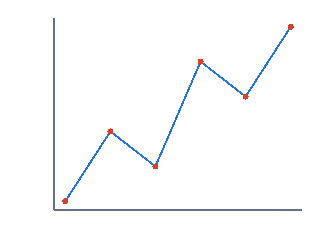

Native experimental PNG

Existing facade PNG


Same fixture and dimensions. Mean absolute unaligned RGBA byte difference: 164.5243/255. This is descriptive, not a parity threshold. Fonts, colors and axis layout differ.
| Format | Native bytes | Facade bytes | Native contract check |
|---|---|---|---|
| rgba | 307200 | 307200 | Owned bytes; 320×240×4 byte extent |
| png | 11871 | 1631 | Owned bytes; 320×240; decoded by Pillow/pypdf |
| svg | 5559 | 1086 | Owned bytes; parsed native SVG 320×240 |
| 13658 | 915 | Owned bytes; 320×240; decoded by Pillow/pypdf |
Independent Pillow/pypdf decoding checks PNG against native RGBA, requires selectable PDF title/legend text, and verifies vector strokes without embedded page images. Both renderers produce vector PDF; visual/layout and scientific parity remain unestablished.